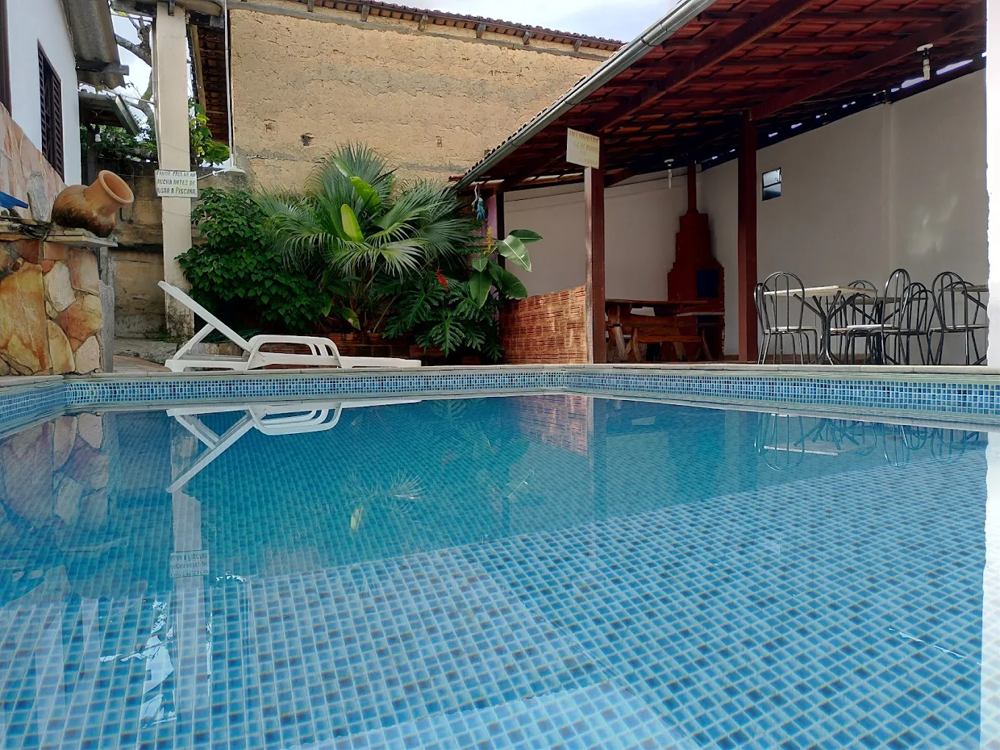
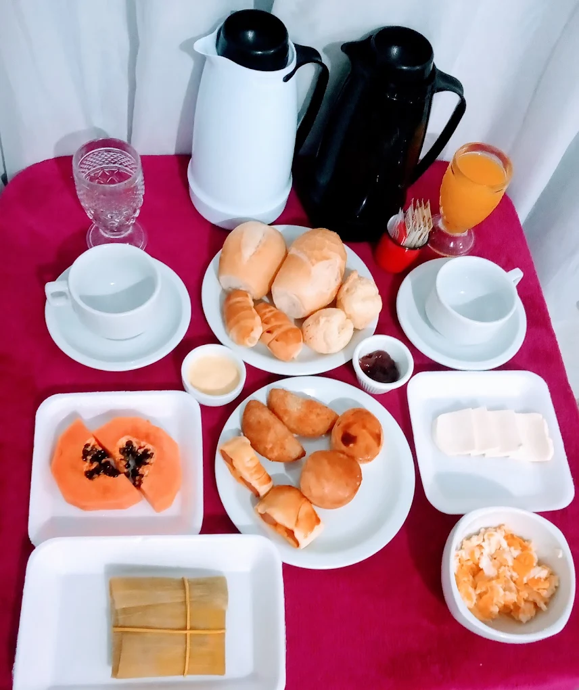

“A pousada é super aconchegante! O atendimento é muito atencioso e o café da manhã é uma delícia, com pamonha fresquinha que fez toda a diferença!”
Mariana Silva
Hóspede · Avaliação verificada

PIRENÓPOLIS, GOIÁS · VILA PIRENEUS
O charme colonial goiano, piscina com sol o dia todo, café da manhã com sabor de fazenda e o rio correndo logo ali. O equilíbrio perfeito entre a calmaria da natureza e o Centro Histórico.
Águas correntes e natureza nativa logo ao lado da pousada
Área de lazer com espreguiçadeiras e pergolados floridos
Buffet goiano com receitas caseiras e farto todos os dias
BEM-VINDO À POUSADA POUSO DO RIO
Pirenópolis é feita de momentos inesquecíveis: o banho de cachoeira com água cristalina, o passeio pelas ladeiras históricas e o cair da tarde dourado. Mas a melhor parte da viagem é ter um lugar acolhedor para repousar.
Na Pousada Pouso do Rio, você encontra a simplicidade calorosa da verdadeira hospitalidade goiana. Com arquitetura rústica, paredes em pedra tradicional de Piri, portas azuis coloniais e varandões cercados por plantas e flores, aqui cada hóspede é recebido com carinho de casa de família.
E o melhor: estamos na Vila Pireneus, um bairro tranquilo e seguro, onde as noites são silenciosas e você acorda com o canto dos pássaros e o murmúrio suave do rio.
Descubra a experiência junto ao rio ↘ RIO DAS ALMAS · NATUREZA VIVA
RIO DAS ALMAS · NATUREZA VIVA
CONTEMPLAÇÃO & NATUREZA
Poucas hospedagens em Pirenópolis contam com o privilégio de estarem vizinhas às margens do Rio das Almas. A poucos passos da pousada, você pode caminhar sob as árvores, sentir a brisa fresca e contemplar as corredeiras que moldam a história da cidade.

01 / PISCINA & ÁREA DE CONVIVÊNCIALAZER PARA TODA A FAMÍLIA
Depois de um roteiro explorando as cachoeiras de Pirenópolis, nada se compara a relaxar em uma piscina refrescante com sol durante o dia todo.
A pousada conta com área de lazer ao ar livre, quiosque rústico, espreguiçadeiras e varandas sombreadas decoradas com artesanato regional, livros e bancos de madeira maciça para desacelerar com conforto.
O DIA COMEÇA COM AFETO
Aqui, o café da manhã é uma celebração aos sabores do coração do Brasil. Servido em ambiente arejado, nosso buffet conta com produtos frescos feitos com carinho caseiro:
Incluso em todas as diárias da pousada.
Reservar Estadia com Café Incluso ↗
Nosso café da manhã com sabor de casa de vóA ATMOSFERA DO POUSO DO RIO
Toque nas fotos para ampliar e sentir um pouco
da tranquilidade que espera por você em Pirenópolis.
QUEM CONHECEU, RECOMENDA
“A pousada é super aconchegante! O atendimento é muito atencioso e o café da manhã é uma delícia, com pamonha fresquinha que fez toda a diferença!”
“A localização na Vila Pireneus é perfeita: fica pertinho do centro histórico, mas em uma rua calma, sem aquele barulho das festas. A piscina é ótima e o rio ao lado dá uma paz sem igual.”
“Lugar acolhedor, com aquele ar de casa no interior. A equipe foi muito prestativa nos ajudando com dicas de passeios e cachoeiras. Excelente custo-benefício em Pirenópolis!”
Depoimentos reais de hóspedes registrados no Google Maps e plataformas de viagem.
COMO CHEGAR
Você aproveita a vida noturna, os restaurantes e feirinhas do centro de Pirenópolis e retorna para uma noite de sono verdadeiramente reparadora e silenciosa.
Telefone / WhatsApp direto: (61) 98214-2856
Pousada Pouso do Rio · Vila Pireneus, Pirenópolis – GO
INFORMAÇÕES PRÁTICAS
O check-in tem início a partir das 14:00 e o check-out é realizado até as 12:00. Caso precise chegar mais cedo ou sair um pouco mais tarde, entre em contato conosco antecipadamente pelo WhatsApp para verificar disponibilidade de flexibilização.
Sim! Um buffet colonial farto e saboroso está incluso em todas as diárias, com pamonha típica de Goiás, pães de queijo quentinhos, bolos caseiros, queijo minas, ovos mexidos, frutas da estação, sucos e café quentinho.
Sim, somos Pet Friendly! Seu bichinho de estimação é muito bem-vindo para viajar com você. Apenas informe o porte do seu pet no momento da consulta para que possamos organizar a melhor acomodação.
Nossas acomodações contam com ar-condicionado, frigobar, TV, banheiro privativo e roupas de cama higienizadas. Temos opções para casais, famílias e pequenos grupos de amigos.
Ao reservar diretamente com a pousada pelo WhatsApp oficial, você garante a melhor tarifa disponível sem as taxas e comissões extras cobradas por intermediários (como Booking ou agências), além de contar com atendimento imediato e personalizado dos anfitriões.
SUA PRÓXIMA VIAGEM A PIRENÓPOLIS
Reserve direto com a pousada e garanta as melhores condições para o seu fim de semana ou férias em Pirenópolis.
Atendimento rápido por mensagem · Melhores tarifas garantidas